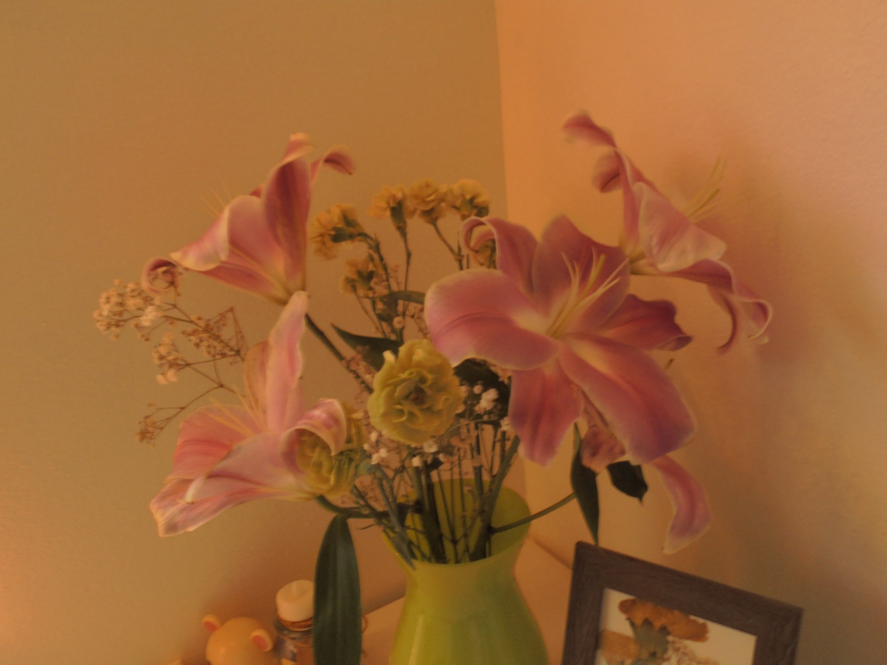

Pink lilies
Pink lilies symbolize admiration, tender affection, and gentle love rather than intense passion.
When I give you pink lilies, I’m showing you the quiet affection I feel as I get to know the person you are.
Pink lilies opening above a little gathering of yellow and white.

Pink lilies symbolize admiration, tender affection, and gentle love rather than intense passion.
When I give you pink lilies, I’m showing you the quiet affection I feel as I get to know the person you are.
In the language of flowers, the carnation speaks of fascination, distinction, and love, and the yellow shade sharpens that message.
These yellow carnations are my little reminder that I notice what makes you different and never want you to feel taken for granted.
Baby’s breath symbolises purity, everlasting love, innocence, sincerity, and new beginnings.
Giving you these tiny blooms is my way of saying I want to care for what we have, even in the quiet moments when there is nothing special to celebrate.